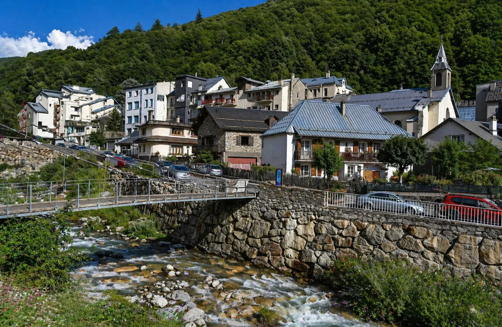

Plus de 100 km de pistes au Grand Tourmalet
N’PY présente le Grand Tourmalet, Barèges-La Mongie, comme le plus grand domaine skiable des Pyrénées françaises, avec plus de 100 km de pistes.
Source : N’PY Grand Tourmalet
Barèges n’est pas seulement l’autre versant du Grand Tourmalet. C’est un village thermal, une porte d’entrée vers le Pays Toy, le Col du Tourmalet, le Pic du Midi, les forêts du Lienz et les grands sites des Vallées de Gavarnie. Pour un propriétaire, la vraie question n’est pas uniquement d’être présent sur Airbnb ou Booking : c’est de rendre son bien immédiatement compréhensible, rassurant et mieux positionné dans cette destination quatre saisons.
La force de Barèges tient à son équilibre : village de montagne, thermalisme, accès au Grand Tourmalet, randonnées, vélo, Bike Park, forêts, grands sites et proximité de Luz-Saint-Sauveur. Un bien doit donc être présenté avec plus de précision qu’une simple annonce “station de ski”.

Ces données ne garantissent pas la performance d’une location. Elles montrent surtout pourquoi un propriétaire doit relier son bien à la bonne promesse : village, thermalisme, ski, vélo, randonnée, nature et canal direct.
N’PY présente le Grand Tourmalet, Barèges-La Mongie, comme le plus grand domaine skiable des Pyrénées françaises, avec plus de 100 km de pistes.
Source : N’PY Grand Tourmalet
Le domaine est présenté avec environ 300 hectares de pistes, 54 pistes à parcourir, 1 100 m de dénivelé et 27 remontées mécaniques.
Source : N’PY Grand Tourmalet
Les Vallées de Gavarnie présentent Barèges comme une station thermale située au cœur du Pays Toy, sur la route du Col du Tourmalet, qui devient en hiver une station village pour accéder au Grand Tourmalet.
Les Thermes de Barèges décrivent le village comme un petit village de montagne situé à 1 250 m d’altitude, au pied du Col du Tourmalet et du Pic du Midi de Bigorre.
Source : Thermes de Barèges · tourisme
Le dossier de presse N’PY 2025-2026 indique 507 961 journées skieurs et 19,17 M€ de chiffre d’affaires pour le Grand Tourmalet sur la saison 2024-2025.
Source : Dossier de presse N’PY 2025-2026
En été 2025, les domaines N’PY totalisent 239 042 passages aux remontées mécaniques. Le communiqué précise aussi que le Bike Park du Grand Tourmalet, versant Barèges, reste accessible en remontée mécanique après l’été.
Source : N’PY · bilan été 2025
L’INSEE indique que l’Occitanie atteint 47,2 millions de nuitées estivales en 2025, en hausse de 2,2 %, et que la fréquentation touristique progresse de 4,2 % dans les Pyrénées.
Source : INSEE Occitanie · été 2025
L’INSEE signale que l’offre locative sur plateformes reste dynamique dans les Pyrénées, avec +9 % de nuits disponibles et +10 % de nuits réservées sur la saison observée.
Source : INSEE · données locatives été 2025
En avril 2026, La Semaine des Pyrénées indique que le réseau N’PY a enregistré 2 127 058 journées ski sur l’hiver 2025-2026, soit la deuxième meilleure saison depuis 2017.
Source : La Semaine des Pyrénées · avril 2026
Un bien au centre village, proche des thermes, orienté vers Tournaboup, situé vers le Lienz ou pensé pour les cyclistes du Tourmalet ne se présente pas avec le même angle. Plus la promesse est précise, plus le voyageur comprend pourquoi ce logement correspond à son séjour.
La promesse repose sur le confort, l’accès aux thermes, les commerces, les restaurants, la simplicité d’arrivée et le séjour ressourçant.
Le point clé est la facilité d’accès au domaine : stationnement, navettes, matériel, horaires, retour, parcours famille et lisibilité pratique.
L’angle devient plus nature : forêt, raquettes, ski en forêt, balades, calme, authenticité et respiration loin d’un imaginaire uniquement station.
L’été doit être travaillé avec autant de sérieux que l’hiver : cols mythiques, VTT, randonnées, fraîcheur, GR10, Néouvielle et grands sites.
Barèges doit aussi être relié à Luz-Saint-Sauveur, aux services de vallée, au thermalisme et aux séjours qui rayonnent vers Gavarnie.
La lecture de Barèges gagne à être connectée à La Mongie, au Tourmalet, au ski, au Pic du Midi et aux usages quatre saisons du massif.
Barèges attire par son authenticité. Mais si l’annonce ne montre pas clairement l’expérience, le voyageur peut passer à côté de la valeur réelle du bien : accès, confort, thermes, nature, ski, vélo, vue, stationnement et saisonnalité.
Centre village, thermes, route du Tourmalet, Tournaboup, Lienz ou Laquette : chaque localisation change la promesse et les attentes.
Photos, drone, immersion 360, vue, confort intérieur, accès et équipements doivent rassurer avant même la lecture complète de l’annonce.
Le direct ne remplace pas forcément les OTA. Il complète le dispositif, renforce la confiance et limite la dépendance à une seule source de réservations.
Un bien à Barèges doit pouvoir parler ski, mais aussi thermalisme, vélo, randonnée, Bike Park, Néouvielle, GR10 et tourisme de fraîcheur.
Le taux d’occupation ne suffit pas. Il faut regarder les nuits, le prix moyen, les frais, les commissions OTA, les périodes creuses et les arbitrages de saison.
LocPilot structure, conseille, configure et valorise. Le propriétaire garde ses décisions, ses comptes, ses contrats, ses prix et ses encaissements.
L’objectif n’est pas de devenir un intermédiaire de plus. L’objectif est d’aider le propriétaire à reprendre le contrôle de sa visibilité, de sa présentation, de ses outils et de son parcours de réservation.
Travailler les signaux locaux : Barèges, Grand Tourmalet, Pays Toy, Tourmalet, Pic du Midi, Luz-Saint-Sauveur, Gavarnie et Néouvielle.
Créer une lecture visuelle premium : montrer le bien, l’environnement, la vue, l’accès, les volumes et l’expérience réelle avant réservation.
Structurer calendriers, redirections, moteur de réservation ou synchronisation selon l’écosystème choisi par le propriétaire.
Comparer les périodes, les nuits, le revenu, les frais, la dépendance OTA et les leviers de progression sans promettre de résultat automatique.
Un support propriétaire clair peut mieux expliquer la zone, les accès, les équipements, les saisons et les bonnes raisons de réserver en direct.
LocPilot structure la visibilité et les outils sans se substituer au propriétaire pour les prix, contrats, encaissements ou obligations réglementaires.
LocPilot intervient dans un cadre de conseil, de visibilité locale, de structuration digitale, de configuration d’outils et de prestation de services. Le propriétaire reste seul décisionnaire et responsable de ses annonces, prix, réservations, contrats, encaissements et obligations réglementaires.
L’objectif est simple : passer du constat local aux actions concrètes à mettre en place pour améliorer la visibilité du bien, structurer ses réservations et réduire sa dépendance aux plateformes.
Replacer Barèges dans la stratégie globale des destinations ski, thermales, montagne, Pays Toy et quatre saisons du département.
Lire la page 65Relier Barèges à l’autre versant du Grand Tourmalet, au Pic du Midi, au ski d’altitude et aux séjours neige.
Voir La MongieConnecter Barèges à la ville thermale de référence côté vallée, aux services, au bien-être, au Pic du Midi et au bassin Grand Tourmalet.
Voir BagnèresRelier Barèges au Pays Toy, au thermalisme, aux services de vallée, au Tourmalet et aux séjours montagne vers Gavarnie.
Voir Luz-Saint-SauveurConnecter Barèges aux grands sites pyrénéens, aux cirques classés, aux séjours nature et à la logique Pays Toy.
Voir Gavarnie-GèdreVoir comment un bien peut être mieux compris par Google, les voyageurs et les moteurs IA.
Lire le guide SEO/GEOStructurer un canal complémentaire aux OTA, sans confusion ni promesse excessive.
Lire le guide directSynchroniser calendriers, canaux, prix et messages sans perdre en clarté opérationnelle.
Lire le guide outilsComprendre le périmètre d’intervention LocPilot et les responsabilités qui restent côté propriétaire.
Lire la FAQOui. Barèges fait partie des localités prioritaires de LocPilot dans les Hautes-Pyrénées. L’accompagnement porte sur la visibilité locale, le canal direct, les outils, la valorisation du bien et la lecture de rentabilité.
Non. Barèges est liée au ski via le Grand Tourmalet, mais la destination fonctionne aussi avec le thermalisme, les randonnées, le GR10, le vélo, le Col du Tourmalet, le Bike Park, le Néouvielle, le Pic du Midi et les grands sites des Vallées de Gavarnie.
Oui. La Mongie porte souvent une promesse plus station d’altitude et pied de pistes. Barèges porte davantage une promesse village, thermalisme, authenticité, Pays Toy, accès Tournaboup, Lienz, Laquette, randonnées et séjour quatre saisons.
Les éléments prioritaires sont l’emplacement réel, l’accès au domaine du Grand Tourmalet, la proximité du centre village ou des navettes, le stationnement, la vue, le confort intérieur, le thermalisme, les couchages, les équipements hiver/été, la qualité visuelle, l’immersion 360 et la cohérence entre annonce, site et canal direct.
Oui, s’il reste complémentaire aux plateformes et s’il inspire confiance. Une page locale claire, des visuels forts, une redirection ou un moteur de réservation maîtrisé, des calendriers synchronisés et des informations pratiques peuvent réduire la dépendance à un seul canal.
Seulement si le bien ou l’établissement respecte les conditions d’éligibilité applicables. Google reste décisionnaire de la validation, de l’affichage et de la visibilité. LocPilot peut accompagner la structuration, mais ne garantit pas la validation ni le référencement d’une fiche.
Non. LocPilot structure les signaux, le canal direct, les outils et la lecture de performance, mais ne garantit ni position SEO, ni volume de réservations, ni validation par Google ou par des plateformes tierces.
Faisons un premier point sur votre bien, sa zone exacte, ses visuels, ses canaux, son niveau de dépendance aux OTA et les leviers à prioriser pour renforcer sa visibilité locale.